Product Usage &
User Guide
Why Forge exists, how to install and configure it, and a self-contained operating guide for each role that uses it.
Internal
0.1 Document control
| Version | Date | Author | Summary of change |
|---|---|---|---|
| 1.0 | Sep 2026 | Product & Engineering | First complete guide: rationale, installation, configuration, and per-role operating paths. |
About the screenshots in this guide
Every figure was captured from a live deployment, then anonymised before capture completed. Personal names, email addresses, the studio name, the client name and project shot codes have all been replaced with fictional equivalents, and profile photographs are obscured. Any name appearing in a figure — A. Sharma, Demo Series, Demo Studio — is fictional. The interface, data volumes and layout are genuine.
How to use this guide
| If you are | Read | You can skip |
|---|---|---|
| An artist | Part A §2, Part C §14 and §15 | All of Part B, and the other role paths |
| A department lead | Part A, Part C §14, §15 and §16 | Part B, administrator path |
| Production head or producer | Part A, Part C §14 and §17 | Part B unless you also deploy |
| An administrator or IT | All of Part B, and Part C §18 | The artist and lead paths |
| Evaluating Forge | Part A in full | Everything else on first pass |
0.2 Contents
- AWhy Forge exists
- 1Purpose and product philosophy
- 2Why we built Forge instead of using ShotGrid
- 3Goals and non-goals
- BInstallation and environment
- 4System requirements and prerequisites
- 5Installation — containerised deployment
- 6Configuration reference
- 7Service topology
- 8Importing your existing tracksheet
- 9Backup, restore and upgrade
- 10Troubleshooting
- COperating guide by role
- 11Getting started — everyone
- 12Artist access path
- 13Lead access path
- 14Production head and producer access path
- 15Administrator access path
- 16Client access path
- 17The review player in depth
- DReference
- 18Capability matrix
- 19Glossary and frequently asked questions
1 Purpose and product philosophy
Forge is a production tracking and review platform for animation and visual effects work. It holds the current state of every shot, routes finished work through review and approval, and delivers it to the client — all on hardware the studio owns.
1.1 What Forge is, in three sentences
Forge replaces the spreadsheet that tracks your shots and the chat thread that carries your review notes with one system that holds both, permanently linked. Every shot has a status, an owner and a history; every review note is attached to the exact frame and version it refers to; every approval records who gave it and when. It runs on your own server, costs nothing per artist, and imports the tracksheet you already maintain.
1.2 The three principles behind it
| Principle | What it means in practice |
|---|---|
| One source of truth | A shot's status lives in exactly one place. If the grid says a shot is in lead review, that is what it is — there is no second spreadsheet that might disagree. |
| Feedback belongs to the frame | A note is not a message that scrolls away. It is attached to a version and a frame number, and it stays attached for the life of the project. |
| The studio owns its pipeline | Your media, your database, your server. No per-seat licence, no footage leaving the building, and no dependency on an internet connection to do a day's work. |
2 Why we built Forge instead of using ShotGrid
This section exists because it is the first question any experienced production person asks. The answer given here is deliberately fair: ShotGrid is a capable product, and there are situations where it remains the better choice.
2.1 What the alternatives are
The established commercial options are Autodesk Flow Production Tracking, which is the product formerly sold as ShotGrid, and ftrack. Both are mature, both are cloud-hosted, and both are licensed per user. Kitsu is a capable open-source alternative. Beyond those, most studios of our size are, in practice, running on spreadsheets.
2.2 The four reasons we built our own
| Reason | Detail |
|---|---|
| Per-seat cost at our headcount | Both commercial products are licensed per user and quoted rather than published. At a studio of our size the annual figure is a material line item that grows every time we hire. Forge has no per-seat mechanism at all — the cost of adding the sixty-sixth artist is zero. |
| Where the media lives | Client contracts increasingly specify where unreleased material may reside. A cloud tracking tool means uploading work-in-progress footage to infrastructure we do not control. Forge keeps every frame on our own storage. |
| Adapting the tool to our tracksheet | Our production is episodic and tracked in workbooks with one sheet per episode, in a column layout that has evolved over years. Making a commercial tool understand that structure is pipeline work. Forge was built to read the files as they are. |
| Configuration effort against project length | A tool that takes weeks to configure cannot repay that effort on a short project. Forge is deliberately narrower and correspondingly faster to stand up. |
2.3 Where ShotGrid is still better
A comparison with no concessions is marketing, not analysis. Three areas where the incumbent is genuinely ahead:
- Content creation application integration. ShotGrid has mature plug-ins letting artists publish directly from Maya, Nuke and Houdini into the tracker. Forge does not have this. If your pipeline depends on it today, that is a real gap.
- Render farm integration. Submitting and monitoring renders from the tracker is not something Forge does.
- Ecosystem and longevity. A large installed base, an established API, third-party tooling and a vendor with a long track record all carry genuine value that a new internal tool cannot claim.
2.4 Feature comparison
| Capability | Forge | Flow / ftrack | Kitsu | Spreadsheet |
|---|---|---|---|---|
| Shot and task hierarchy | Yes | Yes | Yes | Manual |
| Frame-accurate review player | Yes | Yes | Basic | No |
| Annotation on frame | Yes | Yes | Partial | No |
| Multi-stage approval chain | Yes | Yes | Partial | No |
| External client review | Link + code | Yes | Limited | |
| Imports your existing tracksheet | Any layout | Mapped CSV | Mapped CSV | — |
| Self-hosted, media stays local | Yes | Cloud | Yes | Yes |
| Per-seat licence cost | None | Per seat | None | None |
| DCC plug-in publishing | Not yet | Extensive | Partial | No |
| Render farm submission | Not yet | Yes | Partial | No |
| Attendance and effort tracking | Built in | Add-on | Partial | Separate |
3 Goals and non-goals
Forge sets out to
- Hold the authoritative status of every shot
- Keep review feedback attached to its frame and version
- Make every approval decision auditable
- Import existing tracksheets without reformatting
- Keep all media on studio infrastructure
- Cost nothing per additional artist
- Let clients review without a studio account
- Record effort against shots for future bidding
Forge deliberately does not
- Integrate with Maya, Nuke, Houdini or Blender
- Submit or monitor render farm jobs
- Transcode uploaded media
- Replace your accounting system
- Run as a managed cloud service
- Share data between separate studios
- Ship as a mobile or desktop application
The non-goals are as important as the goals. Each was a deliberate decision recorded with its reasoning in the Requirements Document, and several are on the roadmap rather than permanently excluded.
4 System requirements and prerequisites
Part B is written for whoever deploys and maintains Forge. If you only use the application, skip to Part C.
4.1 Server requirements
| Resource | Minimum | Recommended | Notes |
|---|---|---|---|
| CPU | 4 cores | 8 cores | Import and media serving are the heaviest operations. |
| Memory | 8 GB | 16 GB | Database and cache are the main consumers. |
| Disk — system | 40 GB | 80 GB SSD | Container images and the database. |
| Disk — media | 500 GB | 2 TB or more | Grows with every uploaded version; size for your delivery volume. |
| Operating system | Any supporting Docker Engine and Compose v2 | Linux recommended for production. | |
| Network | Static address on the studio network | Outbound internet not required for core function. | |
4.2 Client requirements
| Requirement | Detail |
|---|---|
| Browser | Current Chrome, Edge or Firefox. The review player requires HTML5 video and Canvas support. |
| Display | 1440 × 900 or larger. The tracking grid and review player both assume desktop width. |
| Network | Access to the Forge server over the studio network. |
| Installation | None. Forge is delivered entirely through the browser. |
4.3 Prerequisites on the host
| Software | Version | Purpose |
|---|---|---|
| Docker Engine | 24 or later | Runs all five services |
| Docker Compose | v2 | Orchestrates the stack |
| Git | Any current | Obtaining and updating the source |
| Node.js | 24 LTS | Only for local development, not for containerised deployment |
| pnpm | 11.20.0 | Only for local development; the version is pinned in the repository |
5 Installation — containerised deployment
The supported production path. Five containers are built and started together; the database schema is created automatically on first start.
-
Obtain the source.
git clone <repository-url> forge cd forge
-
Create the environment file. Copy the example and edit it. Every variable is documented in Section 6. At minimum you must set the database password and the session signing secret — the stack refuses to start without them.
cp .env.example .env # edit .env and set POSTGRES_PASSWORD and JWT_SECRET to long random values -
Generate strong secrets. Do not reuse a value from another system, and do not use a dictionary word.
openssl rand -base64 36 # run twice: once for each secret -
Build and start the stack. The first build takes several minutes as dependencies are installed and the client application is compiled.
docker compose build docker compose up -d
-
Confirm the services are healthy. All five should report running, and the database and cache should report healthy.
docker compose ps
-
Confirm migrations applied. The API container runs schema migrations before it begins serving. You are looking for the migration lines followed by the server starting.
docker compose logs api | tail -20 # expect: "Running migrations..." then "Migrations complete." then the server listening -
Create the first administrator. Run the bootstrap script, which creates the initial tenant, roles, capability grants and administrator account.
docker compose exec api node /app/prod/scripts/reset-and-bootstrap-admin.js
- Sign in. Open the server address in a browser. You should reach the sign-in page shown in Figure 5.1.
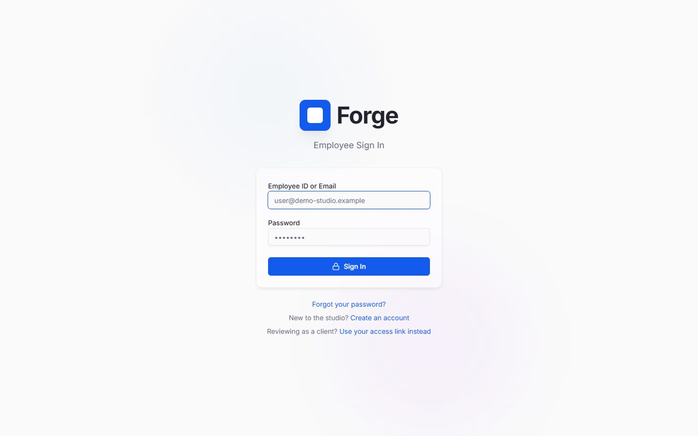
Before you put this into production
- Change the bootstrap administrator password immediately after first sign-in.
- Confirm the media volume is on storage with enough capacity for your delivery volume, and that it is included in your backup regime.
- If the server is reachable from outside the studio network, put it behind transport encryption and set
COOKIE_SECURE=true. - Verify a backup restores before you rely on it. An untested backup is an assumption, not a safeguard.
6 Configuration reference
Every environment variable, what it does, and what happens if it is wrong.
| Variable | Required | Purpose | If set incorrectly |
|---|---|---|---|
| POSTGRES_PASSWORD | Yes | Database superuser password. | The stack refuses to start. Changing it after first run without also updating the database requires a manual reset. |
| POSTGRES_USER | No | Database user. Defaults to postgres. | Connection failures at API start. |
| POSTGRES_DB | No | Database name. Defaults to forge. | Migrations create a schema in the wrong database. |
| DATABASE_URL | Derived | Full connection string, assembled from the values above. | Override only if pointing at an external database. |
| JWT_SECRET | Yes | Signs session tokens. | A weak value allows forged sessions. Changing it signs everyone out immediately. |
| COOKIE_SECURE | No | Marks the session cookie Secure. Set true when serving over HTTPS. | Set true without HTTPS and nobody can sign in — the browser discards the cookie. |
| UPLOAD_DIR | No | Media storage path inside the container. Defaults to /app/uploads. | Point it outside the mounted volume and uploads vanish on rebuild. |
| SMTP_HOST | For mail | Mail relay hostname. | Password resets and client access codes are not delivered. |
| SMTP_PORT | For mail | Relay port. | As above. |
| SMTP_USER | For mail | Relay account. | As above. |
| SMTP_PASS | For mail | Relay credential. Treat as a secret. | As above. |
| SMTP_FROM | For mail | Sender address on outbound mail. | Mail may be rejected by the recipient's server. |
| APP_URL | For mail | Base address used to build links in email. | Password reset and client links point somewhere unreachable. |
| REDIS_URL | No | Cache connection. Defaults to the compose service. | Cache misses fall through to the database; performance degrades but nothing breaks. |
| SENTRY_DSN | No | Error reporting destination. | Unset simply disables error reporting. |
7 Service topology
Five containers on one host. Understanding which does what makes troubleshooting considerably faster.
| Service | Container | Role | Notes |
|---|---|---|---|
| web | forge-web | nginx — serves the client application and proxies API calls | The only service published to the studio network. Caches an upstream address at start, so restart it after the API container is recreated. |
| api | forge-api | Application server | Runs schema migrations at start, then serves requests. Stateless. |
| db | forge-db | PostgreSQL — system of record | All durable state. Backed by a named volume. |
| redis | forge-redis | Cache and rate-limit counters | Persistence deliberately disabled. Losing it costs performance, never data. |
| db-backup | forge-db-backup | Scheduled database dump | Writes to a separate volume from the database itself. |
The one operational quirk worth knowing
nginx resolves the API container's address when it starts and holds it. If you rebuild or recreate the API container on its own, the proxy may keep pointing at the old address and every API call will fail while the application itself appears to be running. The fix is to restart the proxy: docker restart forge-web. Make this the reflex after any API-only deployment.
8 Importing your existing tracksheet
The fastest way to make Forge useful is to load your real production data into it. The importer is built to accept your workbook in whatever layout you already keep it.
8.1 What the importer accepts
- File types. .xlsx, .xls and .csv.
- Multi-sheet workbooks. One sheet per episode, named so the episode can be identified — for example Ep002 or SERIES_Ep014.
- A single flat sheet. Everything on one tab, with no per-episode split, is equally acceptable.
- Varied column names. Matching ignores case, spaces, underscores and hyphens, so Shot, shot_name and Shot Code all resolve to the same field.
- Mixed date formats. Both slash-separated and eight-digit day-month-year forms are understood.
- Reference tabs. Sheets holding notes, durations or conventions are detected and skipped rather than imported as broken rows.
8.2 What it does with columns it does not recognise
It keeps them. Any non-empty column that does not map to a known field is preserved against the created task rather than discarded. Nothing in your source sheet is silently lost, which means an import is never a one-way loss of information.
8.3 Running an import
- Open Tracking Grid and choose Import Tracksheet. The control appears only if your role can create tasks.
- Select the project the tracksheet belongs to. The file upload area stays disabled until you do.
- Choose the workbook. Parsing begins immediately.
- Read the result panel. Every row is reported as created or skipped, with a reason for each skip.
- Check the grid. The entry count at the foot of the page should have grown by the number of rows imported.
If the import reports that no shot rows were found
This means no sheet in the workbook had a column the importer recognised as identifying a shot. It looks for SC#, SHOT_CODE, Shot Code, Shot and Shot Name. Rename your shot column to any of those and import again. The importer reports this as a failure rather than as a successful import of zero rows, precisely so it cannot be mistaken for success.
9 Backup, restore and upgrade
9.1 What is backed up
The backup service dumps the PostgreSQL database on a schedule to a volume separate from the database's own. Uploaded media is not included in that dump. The media volume must be backed up by your normal file backup regime — this is the single most commonly missed step in deploying Forge.
9.2 Taking a manual backup
docker compose exec db pg_dump -U postgres forge > forge-$(date +%F).sql
9.3 Restoring
- Stop the API so nothing writes during the restore:
docker compose stop api - Restore the dump into the database container.
cat forge-2026-09-10.sql | docker compose exec -T db psql -U postgres forge
- Start the API again:
docker compose start api - Restart the proxy so it re-resolves the API address:
docker restart forge-web - Sign in and confirm the expected data is present.
9.4 Upgrading
- Take a backup first. Always.
- Fetch the new version:
git pull - Rebuild:
docker compose build - Restart the affected services:
docker compose up -d - Restart the proxy:
docker restart forge-web - Check the API log to confirm any new migrations applied cleanly.
Schema migrations run automatically when the API container starts and are safe to apply repeatedly — a container that restarts with no pending migrations reports that and continues.
10 Troubleshooting
Symptoms drawn from real incidents on this deployment, with the actual cause and fix.
| Symptom | Likely cause | Resolution |
|---|---|---|
| The page loads but every action fails | nginx is holding a stale address for the API container after it was recreated. | docker restart forge-web. Make this routine after any API-only deployment. |
| "Invalid email or password" for a password you know is correct | The account rate limit has been reached. Repeated failed attempts — including from other people on the same studio connection — consume a shared budget. | Wait for the window to pass, or clear the specific counter in the cache. Only failed attempts count against it. |
| Signing in with different credentials keeps returning the same account | An existing session cookie is still present. Navigating to the sign-in page does not clear it. | Use the avatar menu and choose Log out first, then sign in. This is the single most common source of confusion when testing multiple roles. |
| Import reports zero rows | No recognised shot column in any sheet. | See Section 8.3. Rename the shot column to a recognised heading. |
| Review player says "No footage uploaded yet" | The version exists but no media has been uploaded against it. This is the normal state for a newly created version. | An artist or lead uses Insert Video to upload. Administrators cannot — they hold no review capability by design. |
| Reviews page appears empty | The default tab shows only work awaiting you personally, which is legitimately empty most of the time. | Use the link beneath the empty state, or the All tab, to see work at other stages. |
| Password reset email never arrives | SMTP is not configured, or is configured incorrectly. | Check the SMTP variables in Section 6 and the API log for delivery errors. |
| Uploads disappear after a rebuild | UPLOAD_DIR points outside the mounted volume. | Correct the path and restore the media from your file backup. |
| Everyone shows as offline | Presence is derived from recent activity, not from being clocked in. A user with no requests in the last ninety seconds reads as offline. | Expected behaviour. Clocked-in status and online status are deliberately separate. |
11 Getting started — everyone
This short section applies to every role. From Section 12 onward, each role has its own self-contained path — read only yours.
11.1 Signing in
Open the Forge address in your browser. Enter your work email address and password, and choose Sign In. If you are new and have no account, use Create an account beneath the form; if you have forgotten your password, use Forgot your password? and a reset link will be emailed to you. That link works once and expires after thirty minutes.
11.1a Registering as a new starter
The registration form asks for your name, work email and a password, and then two things that matter for getting you working quickly:
- Department. Pick the one you will actually work in. Your lead uses this to find you and assign you shots — without it, you can sign in but nobody can give you work.
- Your role. Say what you are joining as. If you pick anything above artist, that is recorded as a request rather than granted on the spot: you can sign in and start work immediately as an artist, and an administrator approves the higher role. This is deliberate, so that nobody can give themselves studio-wide authority simply by choosing it from a dropdown.
If you requested a role above artist and it has not taken effect yet, ask your production head or administrator — your account appears in the Studio Roster marked with the role you asked for.
Switching between accounts
If you are already signed in, going to the sign-in page will not let you sign in as someone else — your existing session stays active. You must open the avatar menu at the top right and choose Log out first. This matters most when testing or demonstrating different roles.
11.2 What happens automatically when you sign in
If you hold a production role, signing in clocks you in for the day. Signing out clocks you out. You do not need to do this manually, and signing in twice does not create a duplicate record. Separately, your online status is derived from recent activity rather than from being clocked in, so closing your laptop without signing out will show you as offline after about ninety seconds, while your clock-in for the day remains intact.
11.3 Finding your way around
The left sidebar lists only the areas your role can reach — it will look different for an artist than for a production head, and that is expected rather than a fault. The top bar carries search, your clock status, notifications and your avatar menu. The search box, or Ctrl+K, opens a command palette for jumping directly to a project, shot or task.
11.4 Why a control you expected is missing
Forge hides actions your role cannot perform rather than showing them and failing when you try. If a colleague can see a button that you cannot, that is a difference in role capability, not a bug. Section 18 lists exactly which role holds which capability.
12 Artist
Everything an artist does, from finding today's work to getting a shot approved. Nothing in this section requires any other part of the guide.
You can
- See work assigned to you
- Claim unassigned work
- Update the status of your tasks
- Log time against a task
- Upload a version for review
- Annotate and comment on your shots
- Submit work for lead review
You cannot
- Assign work to other people
- Approve any review stage
- See other departments' work
- See colleagues' attendance
- Share anything with a client
- Change roles or settings
12.1 Your task board
You land on My Tasks after signing in. It shows only your work, arranged in columns by stage. The count beside each filter tells you how much sits at that stage.
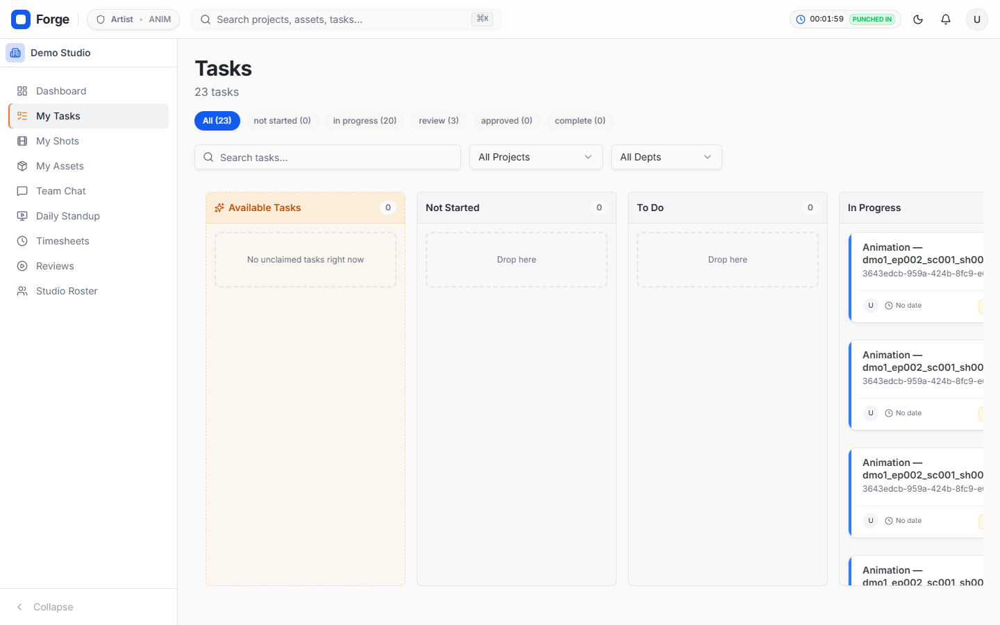
12.2 Working a task
- Open the task by clicking its row or card. A panel opens on the right with the full detail: description, shot, department, due date, and the time logged so far.
- Move it to In Progress when you start, using the status control. Everyone tracking the show sees this immediately.
- Log your time as you go. This feeds the studio's effort history and is what makes future bids accurate.
- Add comments for anything the next person needs to know. Comments stay with the task permanently.
- Upload your version when you have something to show — see 12.3.
- Submit for review when it is ready. It moves to your lead's queue.
12.3 Uploading a version and submitting it
Open Reviews from the sidebar and select the shot you are working on. If nothing has been uploaded yet the player shows "No footage uploaded yet" with an Insert Video button. Choose it and select your file — MP4, WebM, MOV and AVI are accepted, up to 500 MB.
Once the media is in, you can review your own work with the full annotation toolset before sending it on. When you are satisfied, use Submit to Lead/Supervisor for Review in the top bar. The shot moves to lead review and your lead sees it in their queue.
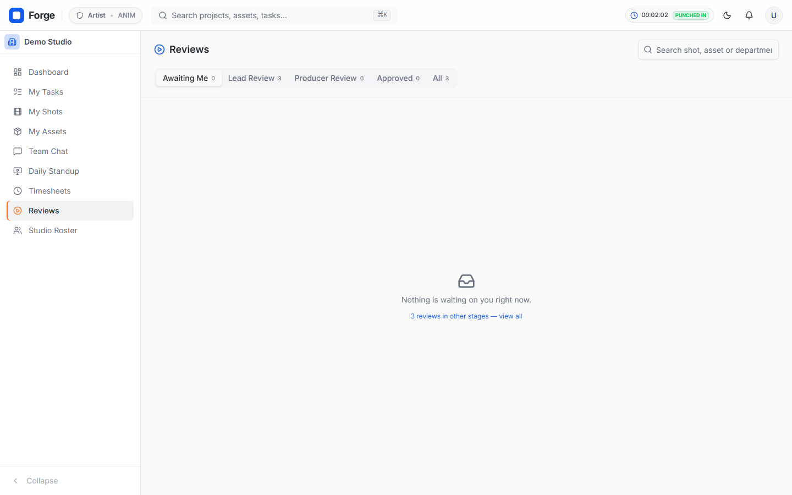
12.4 When changes are requested
If your lead requests changes, the shot returns to you with the reason recorded, and the task moves back to In Progress. The note will be attached to the specific frame it concerns — open the review, click the frame number beside the comment, and the player jumps straight there.
12.5 Your shots and assets
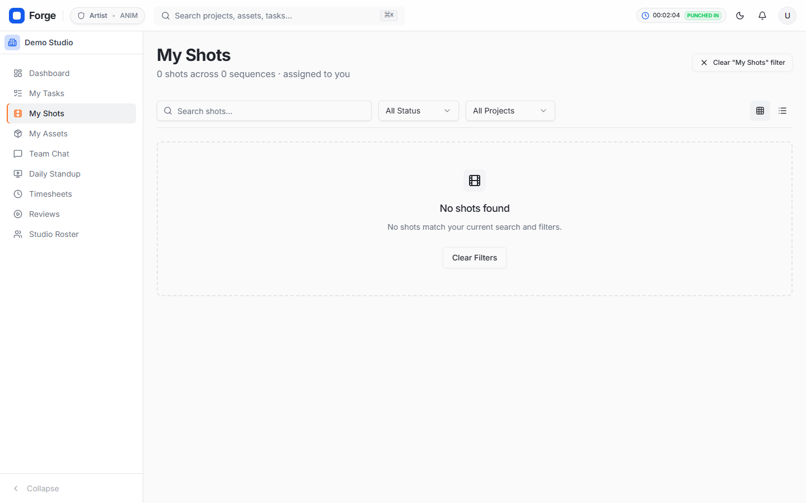
12.6 Timesheets and standup
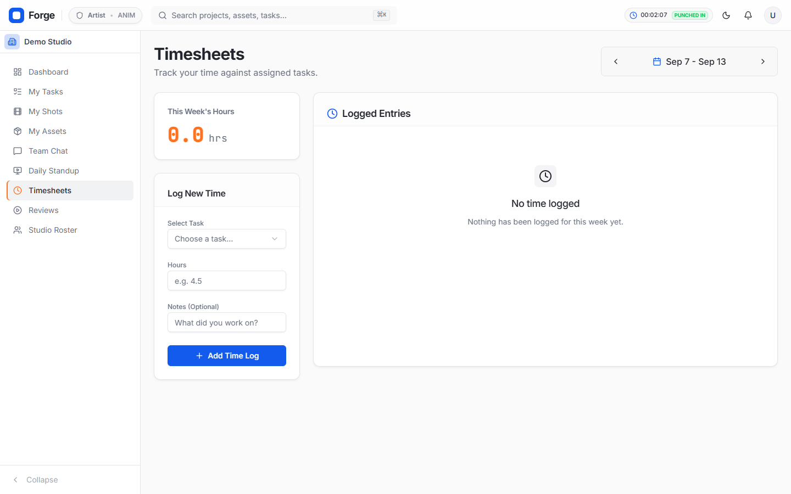
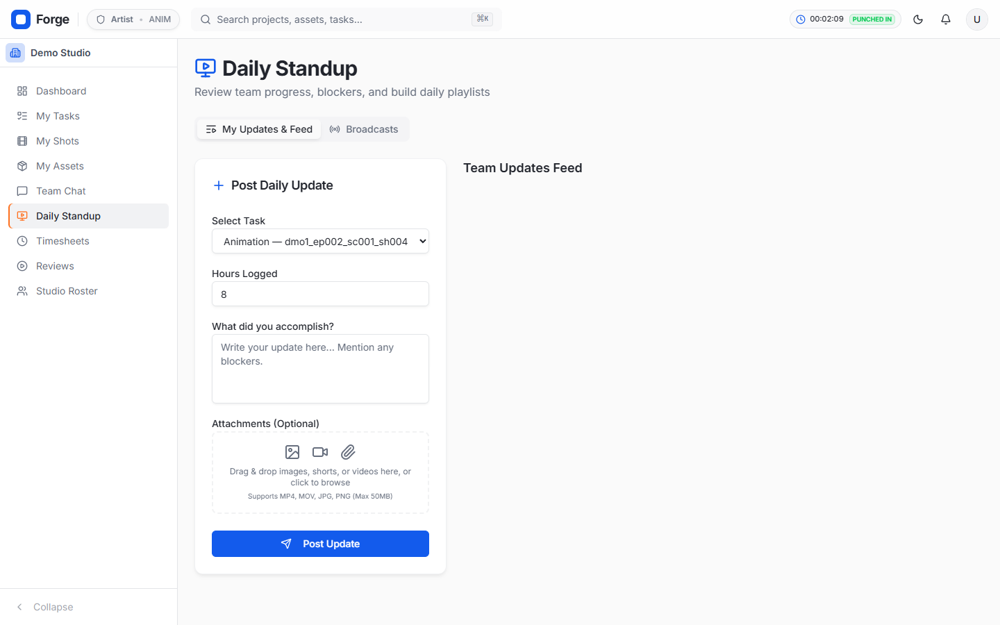
13 Department lead
A lead does everything an artist does, within their own department, plus assignment and first-stage approval.
You can
- Everything an artist can
- Create tasks in your department
- Assign and reassign your team's work
- Approve or request changes at lead stage
- See your department's tracking grid
- See your team's attendance and effort
- Present a review to other viewers
You cannot
- Act outside your own department
- Give final production sign-off
- Share work with a client
- Administer accounts or roles
- Change studio settings
13.1 Your department dashboard
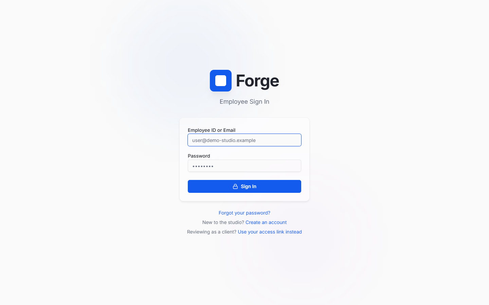
13.2 Reviewing submitted work
Work submitted by your artists arrives in Reviews. The Awaiting Me tab holds what is blocked on your decision; Lead Review shows everything at your stage across the department.
- Open the shot. The player loads the submitted version with its full history beside it.
- Play it through. Use the annotation tools to mark anything that needs attention — see Section 17 for the complete toolset.
- Add comments. Each is anchored to the frame you were on, so the artist sees exactly what you meant.
- Decide. Approve sends it to production review; Request Changes returns it to the artist with your reason recorded.
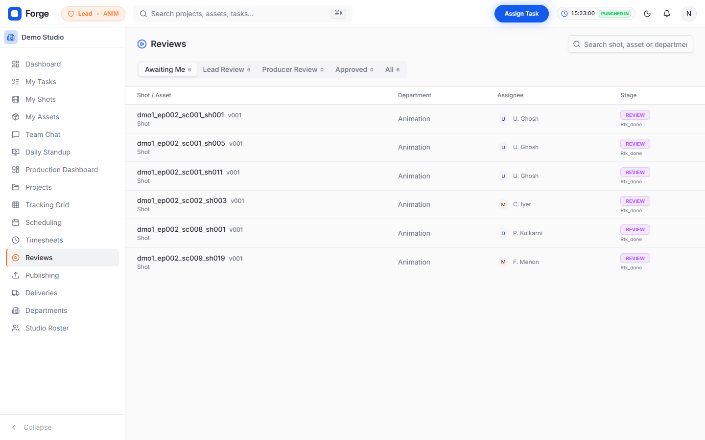
13.3 Assigning and reassigning work
Open any task in your department and use Reassign beside the assignee to move it to someone else on your team. The dropdown lists your department's roster. You can also create new tasks with Assign Task in the top bar.
13.4 The tracking grid
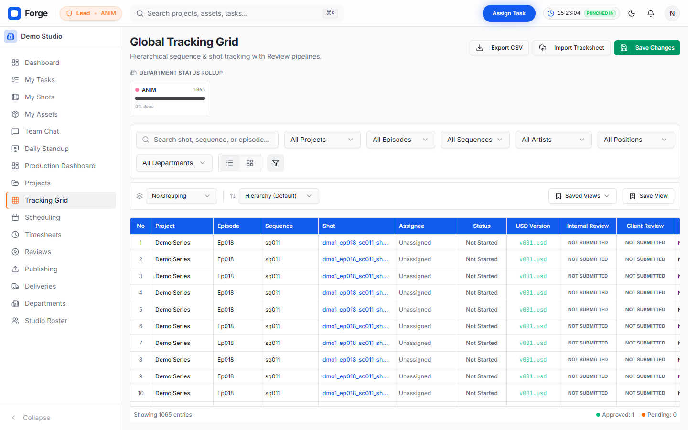
13.5 Scheduling and capacity
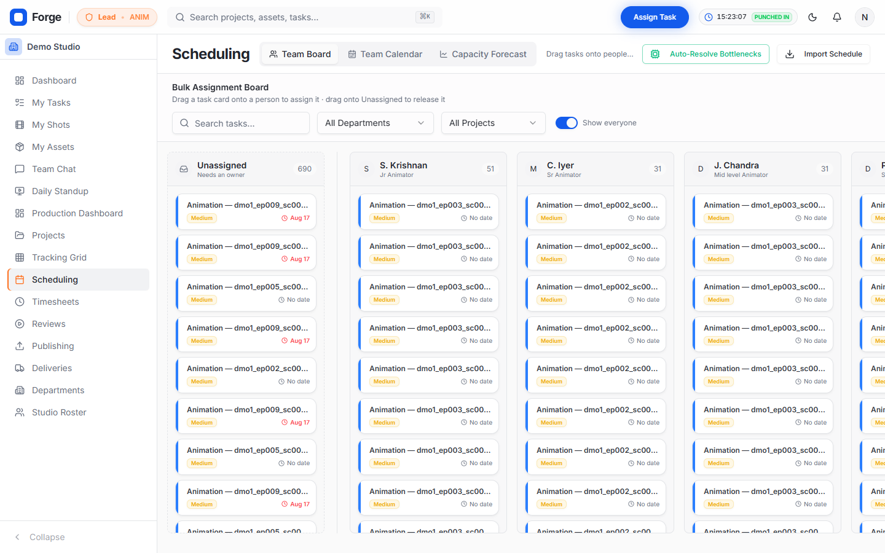
14 Production head and producer
Studio-wide authority: every department, final approval, and the handover to the client.
You can
- See and act on every department
- Give final approval after lead review
- Share approved work with clients
- Create and assign work anywhere
- Import tracksheets
- See all attendance and effort
- Administer accounts and roles
- View financial reporting
Worth knowing
- You are the last gate before a client sees work
- Sharing with a client is a one-way door — confirm before sending
- Your approval is recorded permanently against the version
- You can act in any department, so check the department filter before bulk edits
14.1 The studio dashboard
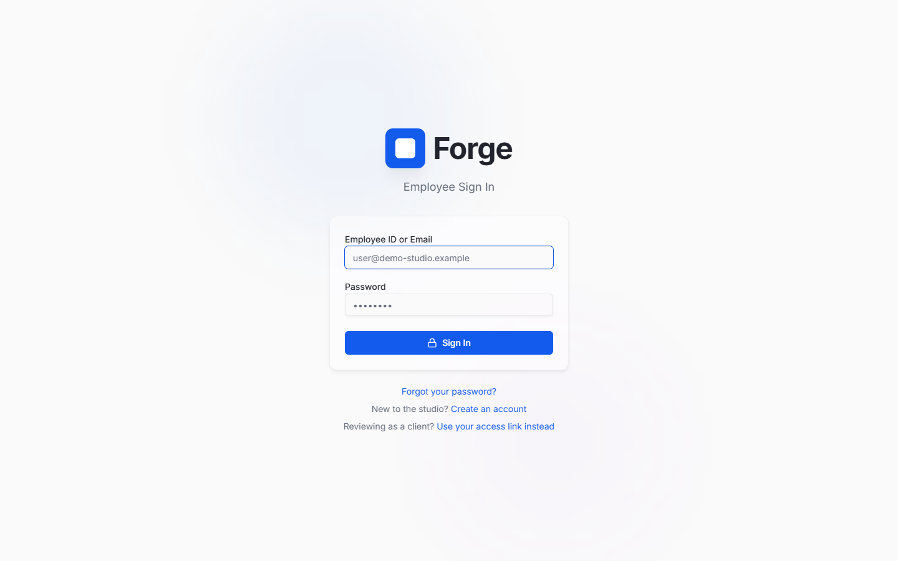
14.2 The tracking grid, studio-wide
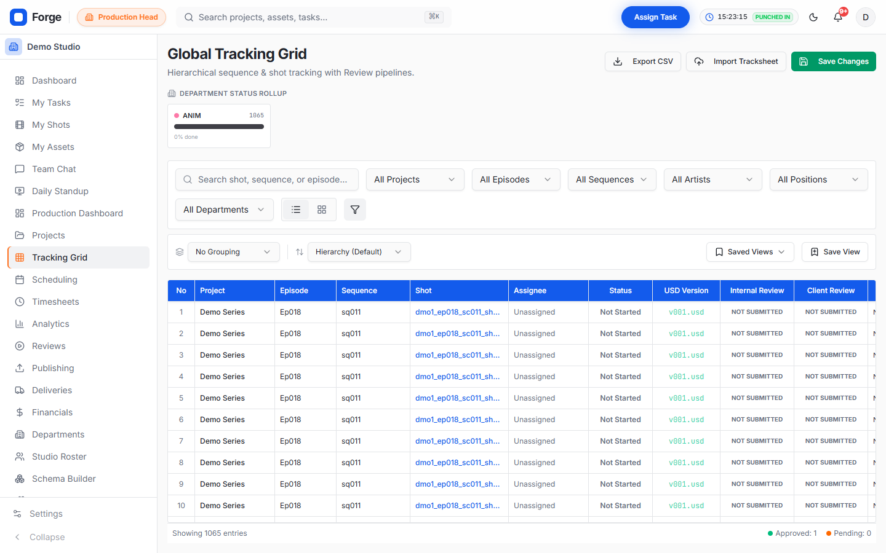
14.3 Final approval
Work approved by a lead arrives at production review. Open it, satisfy yourself it is ready, and approve. That approval is recorded against the version with your name and the time, and it is the point at which the shot becomes eligible to share with the client.
14.4 Sharing with a client
- Open the approved version and choose Share with Client.
- Enter the client's email address. Forge generates an access link and a separate code.
- The code is emailed to the client automatically. They need both the link and the code to see anything.
- Their feedback returns into the shot record, where your team can see it.
- You can revoke the link at any time; access stops on their next request.
14.5 Projects, people and reporting
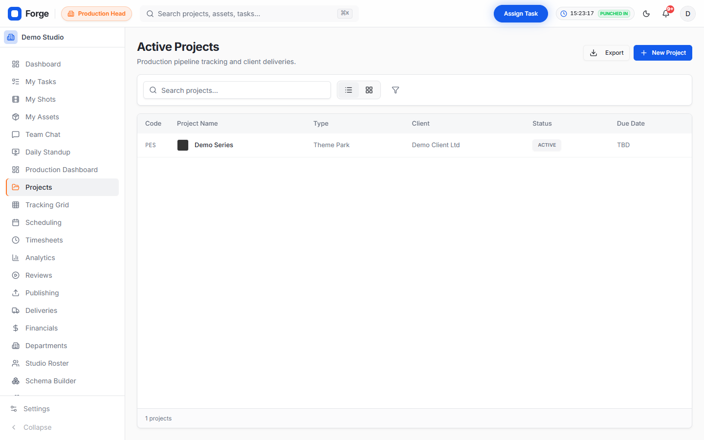
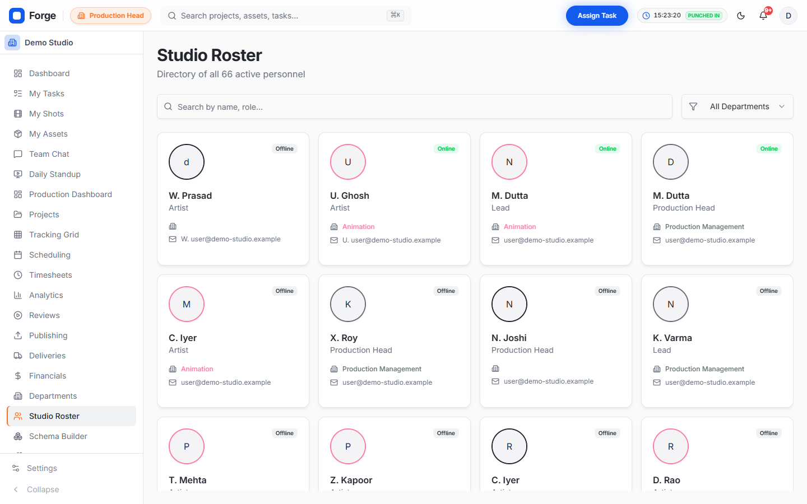
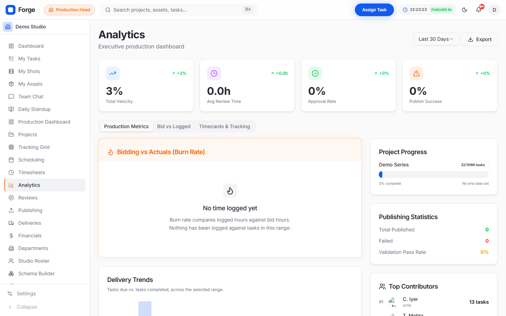
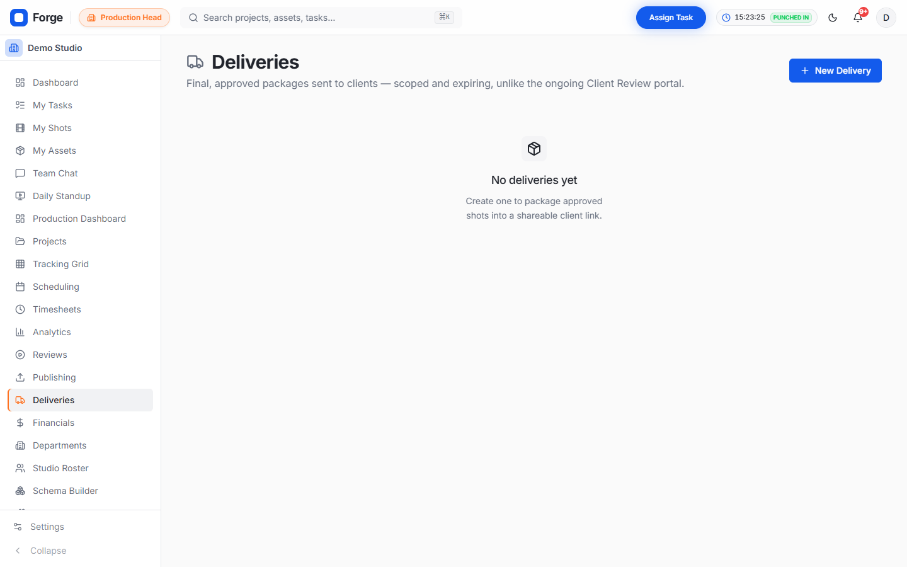
15 Administrator
The administrator stands the studio up and watches it run. It is deliberately not a production role, and this is the most commonly misunderstood part of Forge.
Why you cannot assign or approve work
The administrator holds no task or review capability at all. This is a designed separation, not an oversight: the person who administers accounts and monitors the studio should not also be a participant in the approval chain they oversee. You can see everything and comment on anything, but you cannot create, assign, edit or approve production work. If you need to do those things, you need a production role as well.
You can
- Create, deactivate and reactivate accounts
- Assign roles and departments
- Edit the capability matrix
- Configure departments and pipeline order
- Manage licences and integrations
- View the audit log and roll changes back
- View financial reporting
- See and comment on any task
You cannot
- Create, assign or edit tasks
- Be assigned work
- Upload versions or submit reviews
- Approve any review stage
- Share work with clients
- Send studio broadcasts
15.1 Your dashboard

15.2 Managing people
- Open Studio Roster to see everyone, their role, department and current status.
- To onboard someone, either create the account directly or let them register themselves. A self-registered account arrives as an artist with its department already set, so their lead can assign work immediately without waiting for you.
- Look for an amber Requested badge on a roster card. That person asked to join at a higher role than artist, and it is waiting on your decision. Setting their role — whether to what they asked for or to something else — resolves the request and clears the badge.
- To offboard someone, deactivate the account. This immediately ends their sessions and refuses future sign-in, while keeping every task, comment and approval they contributed.
Deactivate rather than delete
Deactivation removes access but preserves history. Deleting a user would orphan every task they worked on and every approval they gave, which is why the interface does not offer it. A deactivated person can be reactivated at any time.
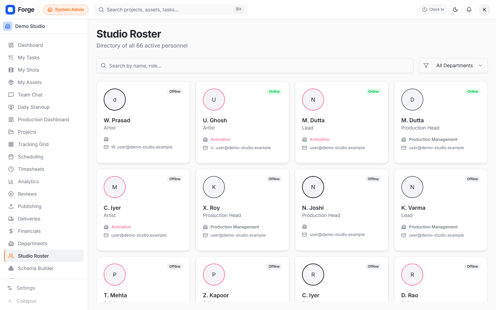
15.3 Roles and capabilities
Capabilities are named permissions granted to roles, held in the database and checked on every request. Editing the matrix changes what a role can do immediately, without a redeployment. Section 18 documents the default allocation.
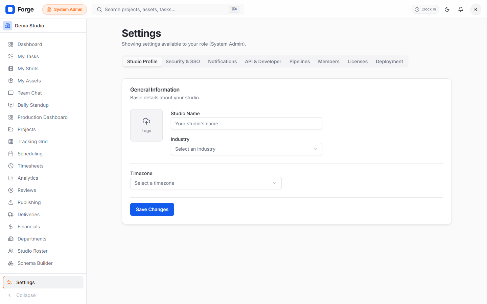
15.4 Audit and rollback
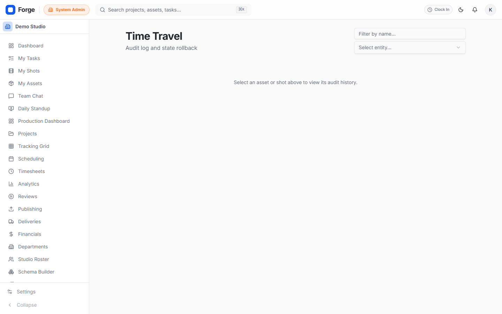
15.5 Integrations and plug-ins
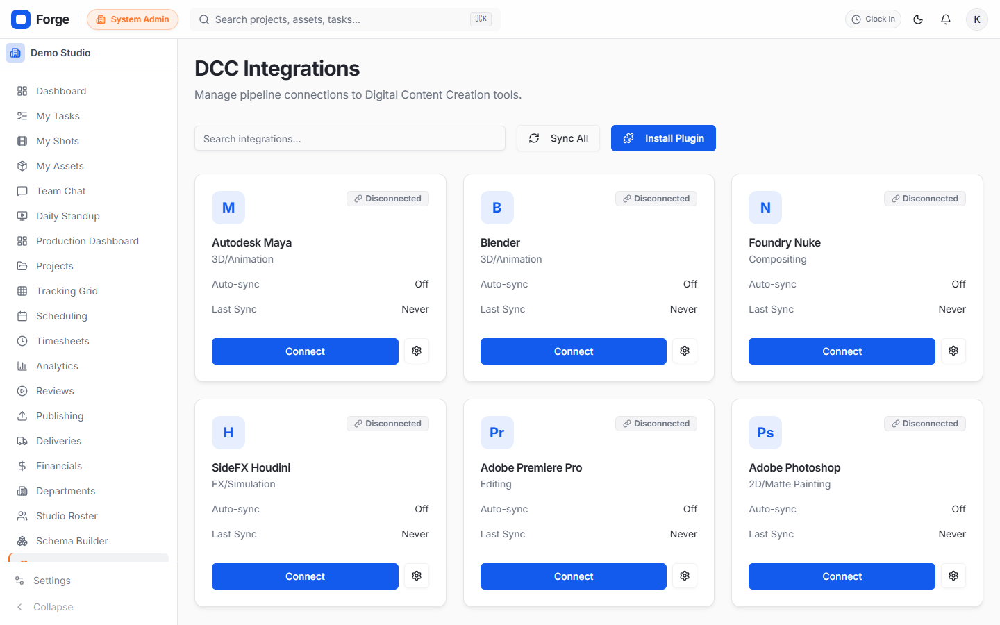
16 External client
What your client experiences. Worth reading even if you are not one, because producers are frequently asked to explain it.
16.1 What the client receives
Two things, and both are needed: a link to a review page, and a separate access code delivered by email. Neither works alone.
16.2 What they can do
- Watch the shared version in their browser, with no account and no software to install.
- Leave feedback, which returns into the shot record where the studio team can see it.
- Approve, or request changes.
16.3 What they cannot do
- See anything that was not explicitly shared with them — no other shots, no other projects, no studio data.
- Reach the studio application itself. A client session is a different kind of session and is refused everywhere else.
- See who is working on what, attendance, or any internal discussion.
Revoking access
A producer can revoke an access link at any time. It stops working on the client's next action. Revoke links once a review round is closed rather than leaving them open indefinitely.
17 The review player in depth
The most feature-dense screen in Forge, and where most of a reviewing day is spent. This section applies to artists, leads, production management and clients alike; which tools you see depends on your role.
17.1 Transport and navigation
| Control | What it does |
|---|---|
| Play / pause | Runs the version at its native rate. |
| Step forward / back | Moves exactly one frame. The frame counter shows current and total. |
| Timeline scrub | Drag to any frame. Reviews are given in frame numbers, so this is how you find the frame a note refers to. |
| Previous / next shot | Moves through the sequence without returning to the queue. |
17.2 Annotation tools
| Tool | Use |
|---|---|
| Select | Pick an existing annotation to move or remove it. |
| Freehand | Draw directly on the frame — the most-used tool in practice. |
| Arrow | Point at something specific. |
| Rectangle | Box a region needing attention. |
| Text | Place a written note on the frame itself. |
| Eraser | Removes your own annotations. It will not remove someone else's. |
| Colour | Six colours. Convention is worth agreeing per studio — for example red for required changes, green for approved detail. |
17.3 Comparison tools
| Tool | Use |
|---|---|
| A/B wipe | Drag a divider across the frame to compare two versions in place. The fastest way to show what changed between revisions. |
| Onion skinning | Displays adjacent frames semi-transparently. Essential for judging animation timing and spacing. |
| Ghosting | Overlays a previous version faintly over the current one to check drift. |
| Compare versions | Places two versions side by side. |
| Screenshot | Copies the current frame including annotations to your clipboard, for pasting into an email or message. |
17.4 Comments and the approval chain
The panel on the right carries three tabs. Comments holds the discussion, the approval chain and the history. Client holds external feedback. Properties holds the version's metadata.
A comment posted from the player records the frame you were on. Anyone reading it later can click the frame number and jump straight there — this is what stops "the thing in the top left" from being ambiguous three days later. The approval chain above the comments shows which stages have been passed and by whom.
17.5 Presentation mode
A lead or producer can start a presentation, which synchronises the frame position of everyone viewing that version to the presenter's. Viewers cannot scrub or annotate while it runs, so everyone is genuinely looking at the same frame. Use it for supervised dailies.
17.6 Read-only reviewer mode
The Read-only Reviewer toggle disables your own annotation and editing tools for the session. It is useful when demonstrating to a client over a shared screen and you want no risk of accidentally drawing on the frame.
18 Capability matrix
Which role holds which permission. If a control is missing for you, this table explains why.
| Capability | Artist | Lead | Prod. Head | Producer | Admin | Governs |
|---|---|---|---|---|---|---|
| create_tasks | — | Yes | Yes | Yes | — | Creating tasks; importing tracksheets |
| edit_tasks | Yes | Yes | Yes | Yes | — | Changing task fields |
| assign_tasks | — | Yes | Yes | Yes | — | Assigning and reassigning |
| delete_tasks | — | — | Yes | Yes | — | Deleting tasks |
| submit_reviews | Yes | Yes | Yes | Yes | — | Uploading media; submitting; annotating |
| approve_reviews | — | Yes | Yes | Yes | — | Approving a review stage |
| broadcast_updates | — | — | Yes | Yes | — | Studio-wide announcements |
| view_financials | — | — | Yes | Yes | Yes | Financial views |
| edit_financials | — | — | Yes | Yes | — | Editing financial data |
| manage_pipeline | — | — | Yes | Yes | Yes | Departments, stage order, rollback |
| manage_members | — | — | Yes | Yes | Yes | Account lifecycle |
| manage_roles | — | — | Yes | Yes | Yes | Capability grants |
| manage_licenses | — | — | Yes | Yes | Yes | Licence administration |
| manage_integrations | — | — | Yes | Yes | Yes | Integration configuration |
19 Glossary and frequently asked questions
19.1 Glossary
| Term | Meaning |
|---|---|
| A/B wipe | A draggable divider comparing two versions within the same frame. |
| Asset | A reusable element — character, prop, environment — tracked alongside shots. |
| Capability | A named permission granted to a role. |
| Episode | One instalment of a series, containing sequences. |
| Ghosting | A faint overlay of a previous version over the current one. |
| Onion skinning | Semi-transparent display of adjacent frames, for judging motion. |
| Pipeline stage | A department's ordered position in the production flow. |
| Sequence | A group of related shots within an episode. |
| Shot | The atomic unit of work: a continuous run of frames. |
| Tracksheet | The spreadsheet a studio uses to track shot progress. |
| Version | A numbered iteration of media for a shot or asset. |
19.2 Frequently asked questions
| Question | Answer |
|---|---|
| Why can I see fewer menu items than my colleague? | Forge shows only what your role can use. See Section 18. |
| My Reviews page is empty. Is it broken? | Almost certainly not. The default tab shows only work blocked on you. Use the link beneath the empty state to see work at other stages. |
| I signed in as someone else but still see my own account. | Log out from the avatar menu first. Going to the sign-in page does not end an existing session. |
| Do I need to clock in and out? | No. Signing in and out does it. You will not create duplicate records by signing in twice. |
| I closed my laptop without signing out. Am I still clocked in? | Yes, your clock-in for the day stands. Your online indicator will show offline after about ninety seconds, which is separate. |
| Can a client see other projects? | No. A client sees only what was explicitly shared with their link, and cannot reach the studio application at all. |
| Can I get my data out? | Yes. The grid exports to CSV, and the underlying database is standard PostgreSQL you can query directly. |
| What happens to my work if someone leaves? | Their account is deactivated, not deleted. Every task, comment and approval they contributed remains intact. |
| Does Forge work without internet? | Yes, for everything except outgoing email. Core tracking and review run entirely on the studio network. |
| Can I publish directly from Maya or Nuke? | Not yet. Content creation application integration is on the roadmap and is documented as out of scope in the current release. |